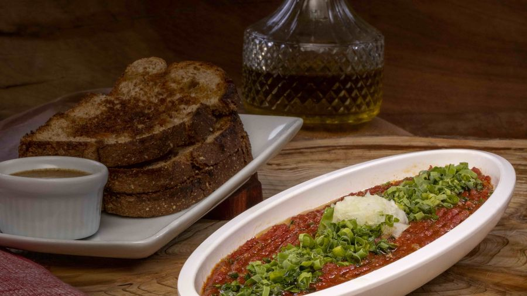

Carne de onça para quem achava que não podia comer
Dez anos vendo gente ter que dizer “eu não posso comer” — e como a gente resolveu.

Em dez anos de balcão, a cena se repetiu tanto que virou incômodo.
Chega um grupo, todo mundo pede, e sobra uma pessoa. Às vezes é a celíaca. Às vezes o vegano. A pessoa sorri, diz “eu não posso, mas pode pedir”, e fica olhando a mesa comer.
A Sem Glúten
O problema nunca foi a carne — carne não tem glúten. O problema sempre foi a broa.
Por isso a versão Sem Glúten mantém tudo o que a Original tem: 200 gramas de patinho fresco, sal, cebola, cebolete orgânica, páprica, cachaça e azeite. O que muda é a base, que passa a ser broa sem glúten. Mostarda escura e azeite por cima, igual.
É a mesma carne de onça. Só que a pessoa celíaca pode comer.
A Vegana
Aqui a troca é a outra: sai a carne bovina, entram 200 gramas de carne de plantas, com o mesmo tempero — sal, cebola, cebolete orgânica, páprica, cachaça e azeite de oliva. A broa você escolhe no pedido, e acompanha mostarda escura e azeite.
E aqui vale a parte honesta: uma versão vegana de um prato cuja graça é a carne crua não vai ser idêntica à original. Não é essa a proposta. A proposta é que a pessoa não fique de fora da mesa.
Quem é vegetariano também come essa — ela cobre as duas restrições.
Por que isso é o nosso diferencial
Porque não foi o mercado que pediu. Não teve pesquisa nem consultor mandando fazer. Foi dez anos vendo a mesma pessoa ficar de fora.
Um prato que é patrimônio de uma cidade precisa caber na mesa inteira. Senão é patrimônio de quem?
Quer provar?